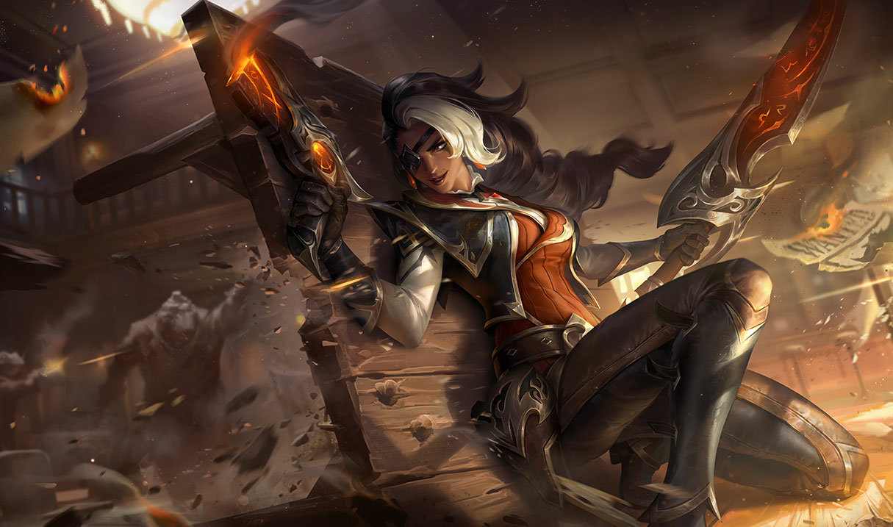

Чтобы спастись от хищников, Кай'Се пришлось стать одной из них. Кай'Су бросили на произвол судьбы и обрекли на смерть, но она выжила благодаря стальной воле и симбионту – живому существу из Бездны, которое стало ей второй кожей. Сейчас Дочь Бездны превратилась в опытного охотника, но застряла между двух миров: первый дал ей жизнь, а второй определил судьбу.
Самира смотрит в лицо смерти с непоколебимой уверенностью и всегда ищет самые рискованные предприятия. В детстве бежав из разрушенной войной Шуримы, Самира нашла свое призвание в Ноксусе. Теперь эта стильная и бесшабашная наемница берется за самые опасные и ответственные задания. Самира орудует пистолетами с черным порохом и клинком, изготовленным по особым чертежам. Она устраняет все преграды на своем пути с неподражаемым шиком и никогда не дрогнет перед лицом смертельной опасности.

Капитан из Билджвотера, известная своей красотой и безжалостностью, Сара Фортуна – это значительная фигура среди закоренелых преступников портового города. Еще ребенком она стала свидетелем того, как король разбойников Гангпланк убил ее семью, а спустя много лет она жестоко поквиталась с ним, взорвав его флагман, когда он находился на борту. Те, кто недооценивает ее милое личико, рискуют столкнуться с привлекательным и непредсказуемым противником... и умереть от переизбытка свинца в организме.